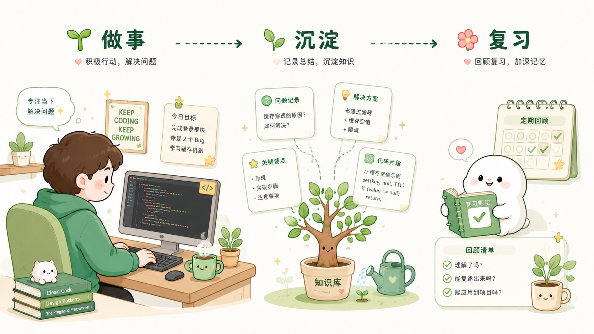
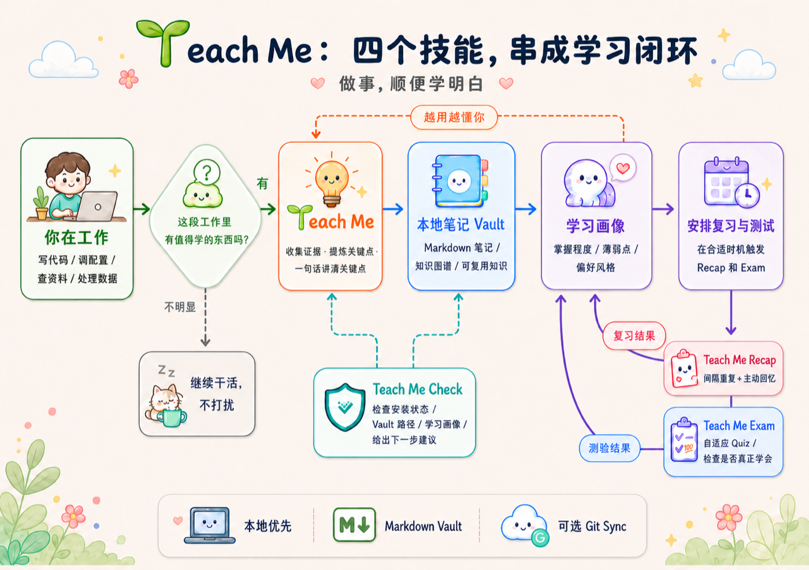

不用额外上课
你正在做的项目、调试的代码、查的资料，本身就是最好的学习材料。Teach Me 在恰当的时候帮你提炼出概念和思路。

把持续建设自己的大脑，当作此生唯一重要的任务。—— 李笑来，《专注的真相》
Why
跑通一个任务和真正学会它，是两件事。Teach Me 帮你把日常工作里的关键瞬间留下来，慢慢变成你能调用、能迁移的知识。
你正在做的项目、调试的代码、查的资料，本身就是最好的学习材料。Teach Me 在恰当的时候帮你提炼出概念和思路。
不会把每一步操作都存下来。只抓能迁移到其他任务的点：隐藏机制、决策理由、可复用思路、未来可能踩的坑。
工作期间安静旁观，只在阶段结束时判断要不要复盘。信号弱就继续，信号强才停下来讲一句。
记录你掌握了什么、哪里还模糊、喜欢怎么被解释。慢慢的，AI 会按你的节奏和风格来教。
Teach Me Recap 用间隔重复和主动回忆，把“当时懂了”变成“之后还能用”。
所有笔记都是普通 Markdown，存在本地。Git 同步是可选项，默认不碰任何云端。
Try it
下面不是效果图，是 Teach Me 实际产出的两种东西：左边是复盘后写进 vault 的一条笔记；右边是 Teach Me Exam 出的选择题——直接点一下试试看。
## PDF4QT page tree mutation
**类型**：concept · **项目**：inkwell
**核心思想**
删除、重排、裁剪这类页面级编辑，如果只在
PyMuPDF 后端写新文件，Qt 主视图无法自然拥
有 undo/apply/save 状态。
**为什么重要**
直接写出新 PDF 会让用户看到文件跳转；返回
intent 则可先原位预览，再由用户 Apply 保存。
**掌握度**：seen · **下次复习**：2026-07-12How
Teach Me 不会替代你正在用的 AI 工具。它更像一位知道什么时候该复盘的老师：先观察，再决定要不要停下来讲一句。
Skills
不是一个大而全的工具，而是四个只做一件事、但能配合起来的小技能。

核心技能。工作时收集证据，阶段边界触发复盘，把高价值知识写入本地 vault，同时更新你的学习画像。
诊断技能。查看安装状态、vault 位置、学习画像、用户与风格，并用自然语言提示下一步。
复习技能。用间隔重复 + 主动回忆帮你复习已记录的概念，防止学完就忘。
测验技能。从学习画像生成自适应 quiz 和测试，检查你哪些地方真懂了，哪些地方还需要再补。
Details
Teach Me 通过各 agent 的 hook 机制接入，只追加自己的配置，不会覆盖你已有的设置。安装和卸载都是可逆的。
| 平台 | 注册位置 | 事件 | Teach Me 行为 |
|---|---|---|---|
| Claude Code | ~/.claude/settings.json |
UserPromptSubmit、PreToolUse、PostToolUse、Stop |
显式学习/工作提示词注入上下文；工具事件计分；Stop 阶段可能请求一次短复盘。 |
| Codex | ~/.codex/config.toml |
UserPromptSubmit、PreToolUse、PostToolUse、Stop |
自动打开 [features] hooks = true，追加 Teach Me hook block，并把 ~/.teach_me_skill 加入 writable root。 |
| Kimi Code CLI | ~/.kimi/config.toml |
UserPromptSubmit、工具事件、Stop |
复用共享 ~/.agents/skills/teach-me 路径，按支持的 hook 事件记录证据和触发复盘。 |
| OpenClaw | ~/.openclaw/hooks/teach-me-learning |
message:received、agent:bootstrap |
先记录 session 是否是开发学习场景，再在 bootstrap 文件里追加 Teach Me context。OpenClaw 的真正 final-review 需要插件层支持。 |
hook 不直接“教”。它负责提供上下文和证据；要不要写笔记、写哪几个点，仍由 agent 在阶段边界按 skill rubric 判断。
Install
把下面这段复制给你的 AI 工具，它会自动克隆、安装并接入 hook。你也可以手动运行 install.sh。
把这段发给 Claude Code、Codex、Kimi Code CLI 或 OpenClaw。
请帮我安装 Teach Me 这个 Agent Skill（会同时安装 Teach Me、Teach Me Check、Teach Me Recap 和 Teach Me Exam）：
1. 克隆 https://github.com/dull-bird/teach-me-skill.git
2. 进入 teach-me-skill，运行 ./install.sh（只复制 skill 文件，不要安装任何额外依赖或测试工具）
3. 如果我使用 Claude Code，运行 ./claude-code/install-hook.sh
4. 如果我使用 Codex，运行 ./codex/install-hook.sh
5. 如果我使用 Kimi Code CLI，运行 ./kimi/install-hook.sh
6. 如果我使用 OpenClaw，运行 ./openclaw/install-hook.sh
7. 安装后运行：
python3 ~/.codex/skills/teach-me/scripts/teach_me.py context
或对应 agent skills 目录下的 scripts/teach_me.py context
8. 之后可以随时检查状态：
python3 ~/.codex/skills/check/scripts/check_me.py report
9. 想复习时可以说“帮我复习一下”，agent 会调用：
python3 ~/.codex/skills/recap/scripts/recap.py next
10. 想测验时可以说“考考我”，agent 会调用：
python3 ~/.codex/skills/exam/scripts/exam.py plan --time 15
11. 第一次写学习笔记前，先让我确认 vault 路径、笔记语言，以及是否启用 Git syncgit clone https://github.com/dull-bird/teach-me-skill.git
cd teach-me-skill
./install.sh
# Optional hooks
./claude-code/install-hook.sh
./codex/install-hook.sh
./openclaw/install-hook.sh
./kimi/install-hook.sh默认 vault 是 ~/.teach_me_skill/vault。不用记命令，直接复制下面的话发给你的 agent。
帮我初始化 Teach Me，语言用自动。
换 vault 位置：
把 Teach Me vault 放到 ~/Documents/Teach-Me-Vault。
多设备同步：
开启 Git sync，远程仓库用 git@github.com:user/teach-me-vault.git，写入后自动同步。Import
书、PDF、网页、Word、EPUB，或者一整个 Obsidian vault，都可以喂给 Teach Me。它会先读一遍，问你熟不熟，再决定是简要归档还是直接考你。导入是一次性的知识注入——原文件和你的 Teach Me vault 之后互不影响。
# 导入一本书 / PDF / 网页 / EPUB / Word
python3 ~/.codex/skills/teach-me/scripts/teach_me.py import \
--source pdf --path /path/to/file.pdf --project "书名"
# 导入整个 Obsidian vault（自动跳过 .teach-me / .obsidian / 系统生成笔记）
python3 ~/.codex/skills/teach-me/scripts/teach_me.py import \
--source obsidian --path /path/to/obsidian/vault --project "My Obsidian"更自然的方式：直接对 agent 说"导入我的 Obsidian vault：/path/to/vault"，或者把一本 PDF 拖给它，说"帮我导入这本书"。
Vault
可读笔记放在可见文件夹；机器状态放在 .teach-me/。默认不会同步到远端，除非你自己打开 Git sync。
vault/
├── 00_Index.md
├── 01_Knowledge_Graph.md
├── 02_Concepts/
├── 03_Algorithmic_Ideas/
├── 04_Project_Maps/
├── 05_Socratic_Questions/
├── 06_Reviews/
├── 07_Learning_Profile/
│ └── Knowledge_Tree.md
└── .teach-me/
├── learning-state.json
├── style-profile.json
└── events.jsonl